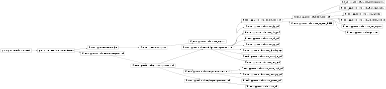

User-level measurement commands, typically for measuring or generating SheetViews.
The file defines base classes for defining measurements and a large set of predefined measurement commands.
Some of the commands are ordinary Python functions, but the rest are ParameterizedFunctions, which act like Python functions but support Parameters with defaults, bounds, inheritance, etc. These commands are usually grouped together using inheritance so that they share a set of parameters and some code, and only the bits that are specific to that particular plot or analysis appear below. See the superclasses for the rest of the parameters and code.
Bases: featuremapper.command.PositionMeasurementCommand
Generate the preference map for angle shapes, by collating the response to patterns.
param Integer positions (allow_None=False, bounds=None, constant=False, default=7, inclusive_bounds=(True, True), instantiate=False, pickle_default_value=True, precedence=None, readonly=False, time_dependent=False, time_fn=<Time Time00001>)
Bases: featuremapper.command.PositionMeasurementCommand
Measure a corner preference map by collating the response to patterns.
Bases: featuremapper.command.SinusoidalMeasureResponseCommand
Measure a direction preference map by collating the response to patterns.
Bases: featuremapper.command.SinusoidalMeasureResponseCommand
Measure a hue preference map by collating the response to patterns.
Bases: featuremapper.command.SinusoidalMeasureResponseCommand
Measure an ocular dominance preference map by collating the response to patterns.
Bases: featuremapper.command.SinusoidalMeasureResponseCommand
Measure an orientation preference map by collating the response to patterns.
Bases: featuremapper.command.SinusoidalMeasureResponseCommand
Measure a phase disparity preference map by collating the response to patterns.
Bases: featuremapper.command.SingleInputResponseCommand
Map receptive fields by reverse correlation.
Presents a large collection of input patterns, typically white noise, keeping track of which units in the specified input_sheet were active when each unit in other Sheets in the simulation was active. This data can then be used to plot receptive fields for each unit. Note that the results are true receptive fields, not the connection fields usually presented in lieu of receptive fields, because they take all circuitry in between the input and the target unit into account.
Note also that it is crucial to set the scale parameter properly when using units with a hard activation threshold (as opposed to a smooth sigmoid), because the input pattern used here may not be a very effective way to drive the unit to activate. The value should be set high enough that the target units activate at least some of the time there is a pattern on the input.
Bases: featuremapper.command.SinusoidalMeasureResponseCommand
Measure the secondary orientation preference maps.
Bases: featuremapper.command.SinusoidalMeasureResponseCommand
Measure preferences for sine gratings in various combinations. Can measure orientation, spatial frequency, spatial phase, ocular dominance, horizontal phase disparity, color hue, motion direction, and speed of motion.
In practice, this command is useful for any subset of the possible combinations, but if all combinations are included, the number of input patterns quickly grows quite large, much larger than the typical number of patterns required for an entire simulation. Thus typically this command will be used for the subset of dimensions that need to be evaluated together, while simpler special-purpose routines are provided below for other dimensions (such as hue and disparity).
Bases: featuremapper.command.UnitCurveCommand
Measures contrast response curves for a particular unit.
Uses a circular sine grating stimulus at the preferred orientation and retinal position of the specified unit. Orientation and position preference must be calulated before measuring contrast response.
The curve can be plotted at various different values of the contrast (or actually any other parameter) of the stimulus. If using contrast and the network contains an LGN layer, then one would usually specify weber_contrast as the contrast_parameter. If there is no explicit LGN, then scale (offset=0.0) can be used to define the contrast. Other relevant contrast definitions (or other parameters) can also be used, provided they are defined in CoordinatedPatternGenerator and the units parameter is changed as appropriate.
param List relative_orientations (bounds=(0, None), constant=False, default=[0.0, 0.5235987755982988, 0.7853981633974483, 1.5707963267948966], instantiate=True, pickle_default_value=True, precedence=None, readonly=False)
param List contrasts (bounds=(0, None), constant=False, default=[10, 20, 30, 40, 50, 60, 70, 80, 90, 100], instantiate=True, pickle_default_value=True, precedence=None, readonly=False)
Bases: featuremapper.command.UnitCurveCommand
Measure spatial frequency preference of one unit of a sheet.
Uses an constant circular sine grating stimulus at the preferred with varying spatial frequency orientation and retinal position of the specified unit. Orientation and position preference must be calulated before measuring size response.
The curve can be plotted at various different values of the contrast (or actually any other parameter) of the stimulus. If using contrast and the network contains an LGN layer, then one would usually specify weber_contrast as the contrast_parameter. If there is no explicit LGN, then scale (offset=0.0) can be used to define the contrast. Other relevant contrast definitions (or other parameters) can also be used, provided they are defined in one of the appropriate metaparameter_fns.
param List contrasts (bounds=(0, None), constant=False, default=[30, 60, 80, 90], instantiate=True, pickle_default_value=True, precedence=None, readonly=False)
Bases: featuremapper.command.UnitCurveCommand
Measures orientation tuning curve(s) of a particular unit.
Uses a circular sine grating patch as the stimulus on the retina.
The curve can be plotted at various different values of the contrast (or actually any other parameter) of the stimulus. If using contrast and the network contains an LGN layer, then one would usually specify weber_contrast as the contrast_parameter. If there is no explicit LGN, then scale (offset=0.0) can be used to define the contrast. Other relevant contrast definitions (or other parameters) can also be used, provided they are defined in CoordinatedPatternGenerator and the units parameter is changed as appropriate.
param List contrasts (bounds=(0, None), constant=False, default=[30, 60, 80, 90], instantiate=True, pickle_default_value=True, precedence=None, readonly=False)
Bases: featuremapper.command.FeatureCurveCommand
Measures orientation tuning curve(s) of a particular unit using a full-field sine grating stimulus.
The curve can be plotted at various different values of the contrast (or actually any other parameter) of the stimulus. If using contrast and the network contains an LGN layer, then one would usually specify michelson_contrast as the contrast_parameter. If there is no explicit LGN, then scale (offset=0.0) can be used to define the contrast. Other relevant contrast definitions (or other parameters) can also be used, provided they are defined in CoordinatedPatternGenerator and the units parameter is changed as appropriate.
param List contrasts (bounds=(0, None), constant=False, default=[30, 60, 80, 90], instantiate=True, pickle_default_value=True, precedence=None, readonly=False)
Bases: featuremapper.command.UnitCurveCommand
Measures the response to a center sine grating disk and a surround sine grating ring at different contrasts of the central disk.
The central disk is set to the preferred orientation of the unit to be measured. The surround disk orientation (relative to the central grating) and contrast can be varied, as can the size of both disks.
param List contrasts (bounds=(0, None), constant=False, default=[30, 60, 80, 90], instantiate=True, pickle_default_value=True, precedence=None, readonly=False)
Bases: featuremapper.command.PositionMeasurementCommand
Measure a position preference map by collating the response to patterns.
Bases: featuremapper.command.UnitCurveCommand
Measure receptive field size of one unit of a sheet.
Uses an expanding circular sine grating stimulus at the preferred orientation and retinal position of the specified unit. Orientation and position preference must be calulated before measuring size response.
The curve can be plotted at various different values of the contrast (or actually any other parameter) of the stimulus. If using contrast and the network contains an LGN layer, then one would usually specify weber_contrast as the contrast_parameter. If there is no explicit LGN, then scale (offset=0.0) can be used to define the contrast. Other relevant contrast definitions (or other parameters) can also be used, provided they are defined in CoordinatedPatternGenerator and the units parameter is changed as appropriate.
param List contrasts (bounds=(0, None), constant=False, default=[30, 60, 80, 90], instantiate=True, pickle_default_value=True, precedence=None, readonly=False)